Terrain Morphing Effect
Contents
Overview
Many times what is perceived as a singular effect can actually be a very well crafted series of effects tied closely together in time made to simulate a singular event. As an example, here is an effect made to simulate a piece of an interior changing to an outdoor forest setting. I am presenting a brief run down of each component of teh effect, but suggest you download the full project and follow through each section to see the full effect settings.
Terrain Morph Effect, Final Render (Movie)
The effect as a whole is actually made up of several particle effects and a blueprint effect all timed to a specific set of events to create the final effect. To breakdown the effect according to the where in the timed sequence each start:
-
-
-
- Post Process White Out
- Adjust Lighting from Interior to Exterior
- Magic Particle Effect
- Floor Material Change
- Grass Growing (Blueprint Effect)
- Bush and Tree Growing Particle Effect
-
-
Effect Breakdown
Post Process Whiteout
This effect is created using a simple Post Process Material which LERPs between the Scene and a Complete White Color using a Material Parameter Collection(MPC) Scalar Value as the alpha. In all of these effects I use an MPC to help keep the blueprints easier to update and change. This Material was added to the unbound post process volume in the level as a Blendable.

Adjusting the Lighting from Interior to Exterior
This is done simply by adjusting the intensity of the point lights and directional light up and down in the level blueprint. In this same step I also un-hide the Sky Sphere and Atmospheric Fog (which start off hidden) to complete the outdoor look. The exact light levels were determined in editor first then transferred into the level blueprint nodes.
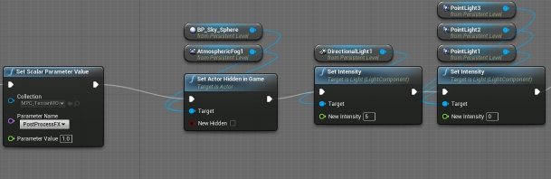
Magic Particle Effect
This particle effect is made from 3 emitters, the expanded bubble, the Magic Dust growing and the stable Magic Dust stable.
Expanding Bubble
The Expanding Bubble is a mesh type emitter where the “bubble pop” effect is controlled by a Dynamic Parameter which connects the material and the emitter and allows the emitter to control the material on the mesh over the particles lifetime.
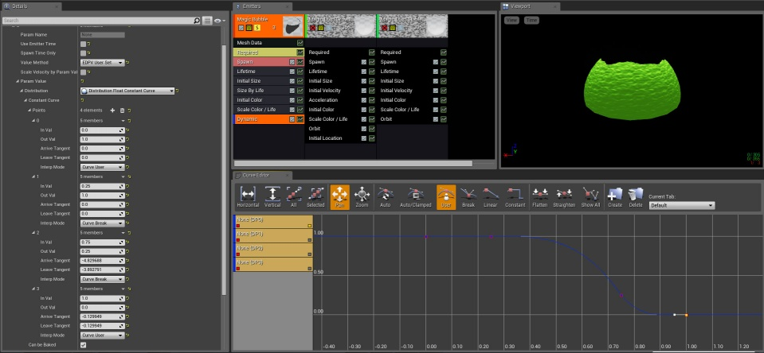
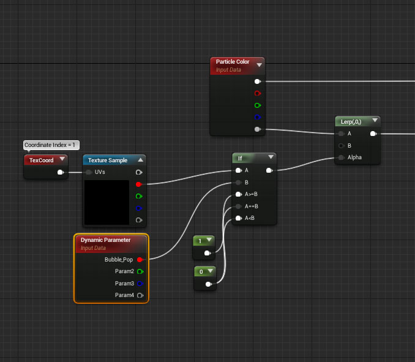
Magic Dust
The Magic Dust Growth and Stable are actually the same effect the growth simply changing the offset value over the particles life from 0 to its final value and thus growing. The important thing to see is that the stable emitter is actually delayed according to the lifetime of the growth ring and actually slightly before. This way it looks like the ring grows and stops and becomes stable.
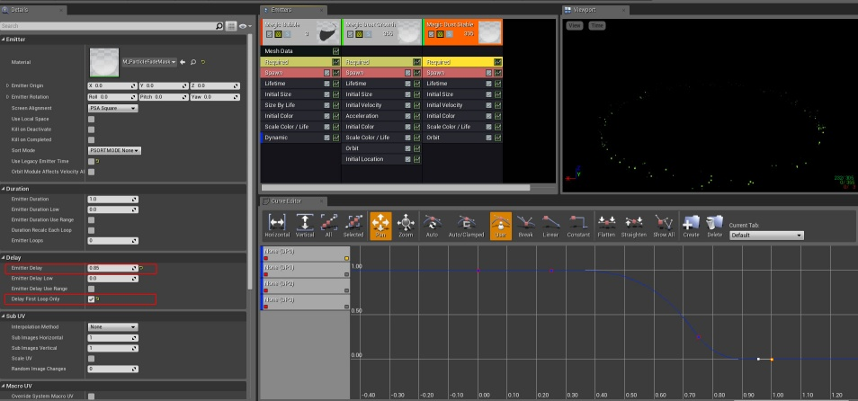
Floor Material Change
This is the real trick of the real trick of the entire effect. The actual mesh that represents the floor (both the Tiled floor and the Grass) never changes only the material adjusts. In this particular effect I am using a flat surface, but this can be done on any static mesh in a similar fashion. You just need to watch how your unwrap is laid out in the UV space.
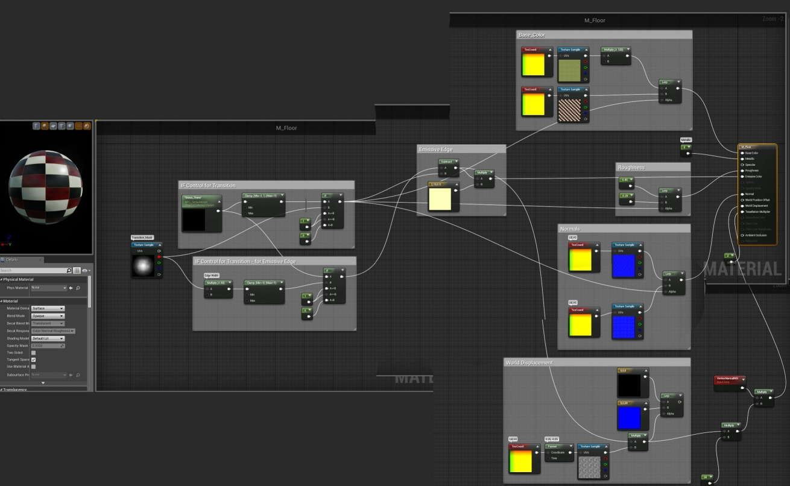
The material itself is controlled by a change in a single scalar value housed in the Material Parameter Collection via the IF node comparisons driving a series of LERP alphas.
Grass Growing (Blueprint Effect)
This is actually an effect that comes from the Blueprint Office Content Example with only one small section added. This is the blueprint which spawns a series of flowers and grasses around the tree in Blueprint Office, which I have re-purposed to only spawn my grass. The Construction script is identical but in the Event Graph I store the values of the grass in an array and reset all the Z Scale Values to 0 and when it’s time for them to actually spawn I simply reset the Z value of all the array element using a LERP in the Blueprints. This LERP-ing simulates the growth of the grass.
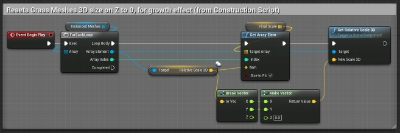
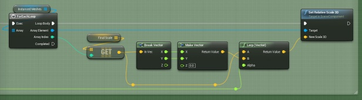
Bush and Tree Growing Particle Effect
These two effects do fire off in the order of Bush then Tree, but besides the scale difference and mesh used the effects themselves are identical. The Sphere(Seeded) module has been shared between the two emitters with a Random seed information shared to insure that the bushes always spawn in the same spot so the bushes and trees grow in the same spots that the finished trees exist. You can also see that the Int. Mesh Rot (Seed) always the same for rotation. This way the trees and bushes will be slightly different each time but will still give the growing effect we are after.
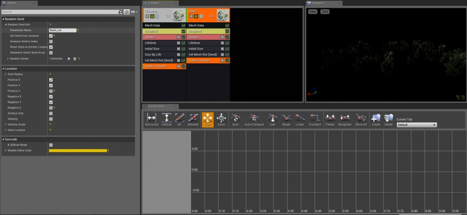
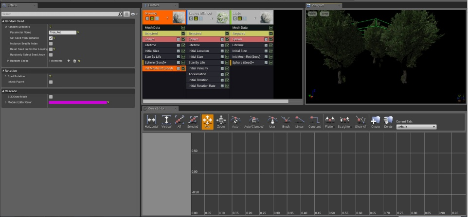
For the Tree Effect I also added a Leaves and branches effect the shoots off as they complete their growth, making it look like leaves and branches are being thrown up in the air during the growth. It is an addition and not necessary for the overall effect but a nice extra touch which helps sell the motion of the trees.

The Final Blueprints
Here is the Event Graph of the Actor Blueprint for the Entire effect, please note that floor mesh, the grass construction script, and all effects exist in this singular blueprint. With the exception of the grass random placement in the construction graph all effects are run in the Event Graph.
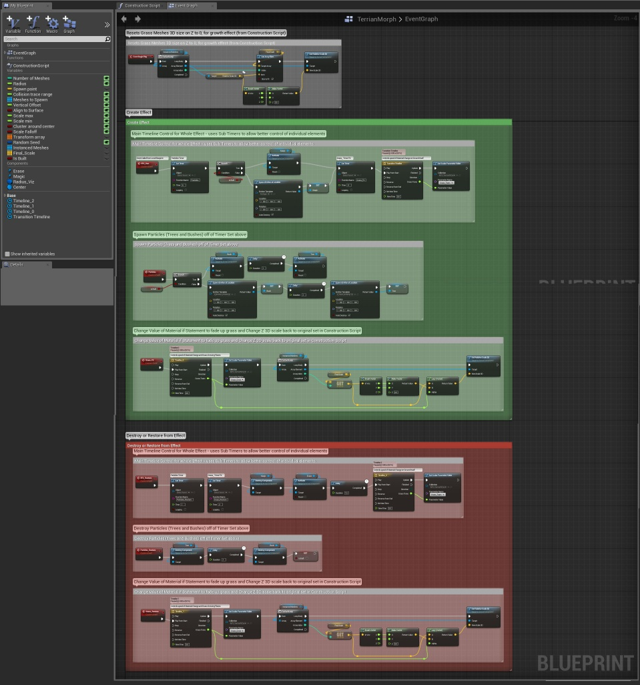
The Level Blueprint uses the button and key pressed to drive the custom events in the actor blueprint above as well as adjust the lighting as mentioned previously.
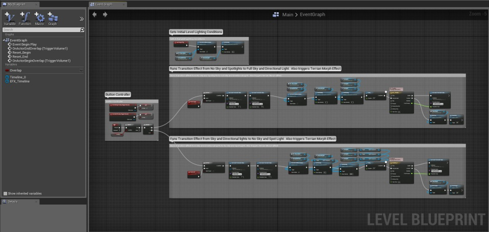
Full Project
Here is a link to the full project for dissection:
TerrainMorphEffect.zip
TerrainMorphEffect_4_7.zip
The final build for this project is built using the 4.6.0 . Unzip files into a new folder and double click the TerrainMorphEffect.uproject file.
- Now Updated with a 4.7 project - 6/4/2015